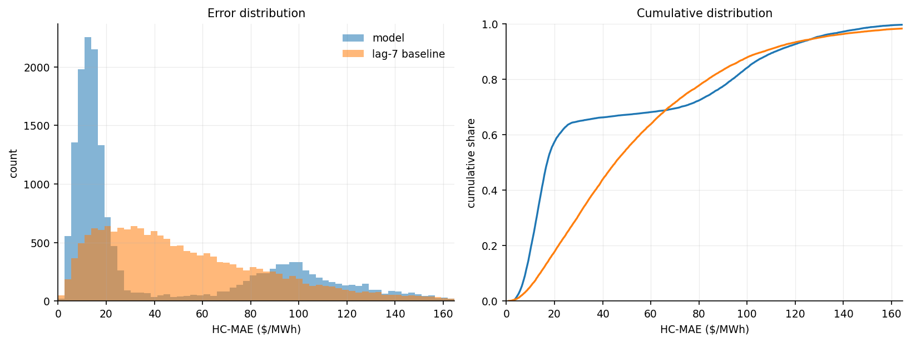
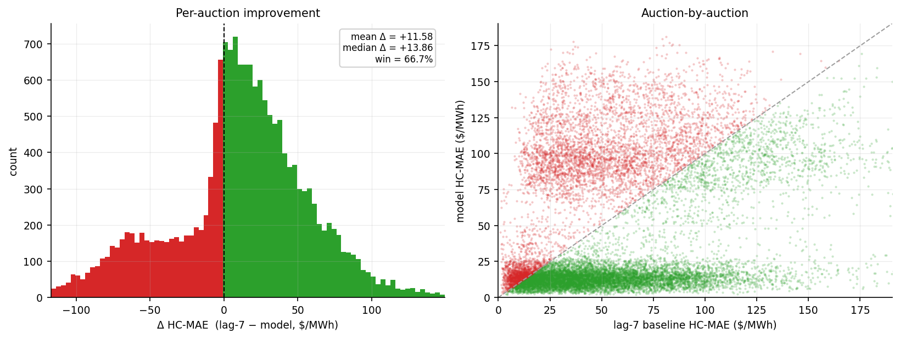
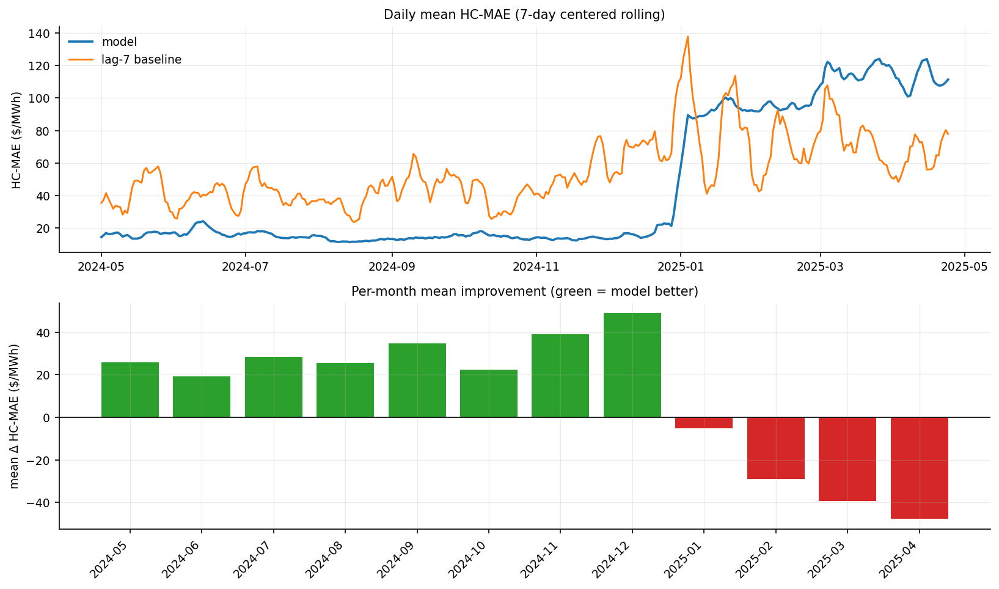
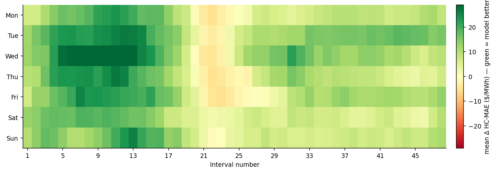
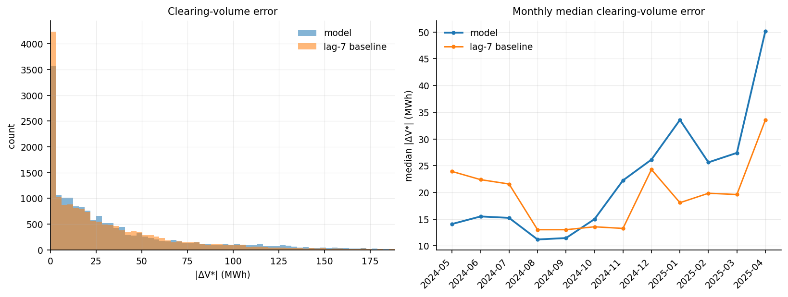
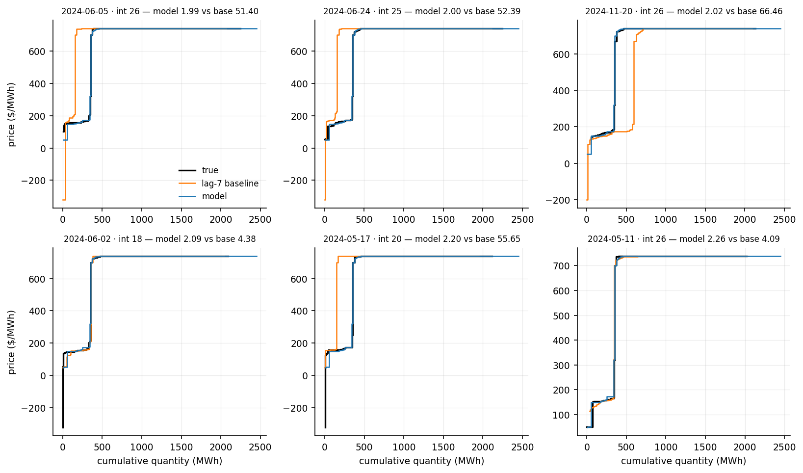
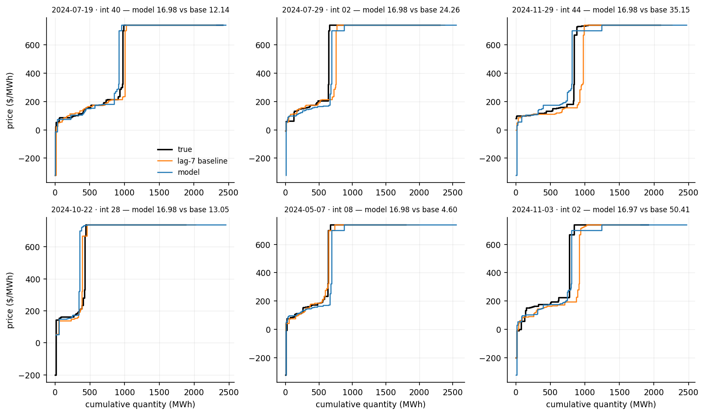
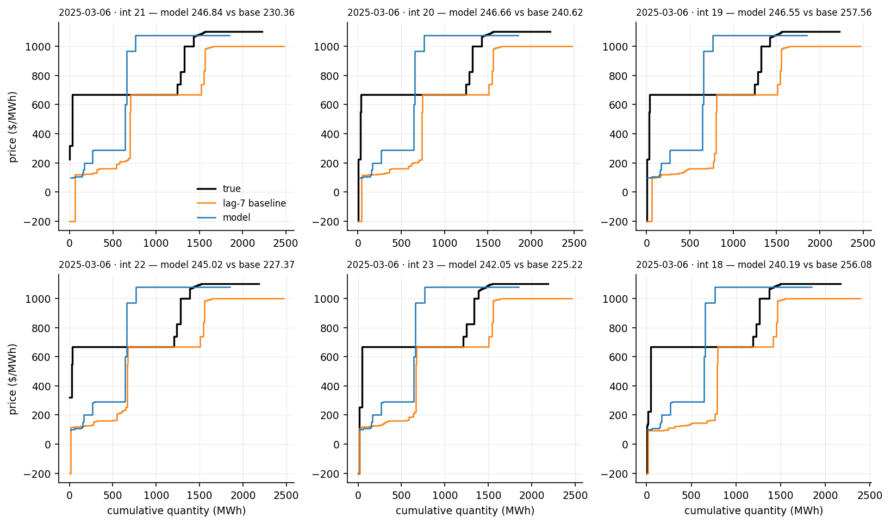

A medoid is a real training curve chosen by k-medoids to stand for a group of curves. This scenario has 48 medoids chosen with HC-MAE, the score of this site, as the distance.
The 48 medoids are real training curves chosen under HC-MAE, from the training window only (1 January 2021 to 30 April 2024). The search reads each curve at 2,048 equally spaced volumes, which gives a fast approximation of HC-MAE. It runs FasterPAM, a fast version of Partition Around Medoids, on a sample of 12,000 training curves spread evenly over the months and intervals. Then, on all training curves, each curve is assigned to its nearest medoid, and a medoid moves to another curve of its group when that lowers the summed distance to the curves of the group, for at most 6 rounds.
This row reads the true curve, so it is not a forecast. For each auction it returns the medoid with the smallest HC-MAE to the true curve. Its score is the best that any method returning one of these 48 medoids can reach.
7-day-ahead · test 2024-05-01 → 2025-04-24 · 17,232 auctions · reference: lag-7 baseline
| This model | lag-7 baseline | |
|---|---|---|
| Mean HC-MAE ($/MWh) | 43.25 | 54.83 |
| Median HC-MAE ($/MWh) | 16.98 | 45.35 |
| Win % vs lag-7 | 66.7% | - |
| Mean |ΔV*| (MWh) | 34.82 | 33.66 |
| Median |ΔV*| (MWh) | 19.83 | 18.75 |
| Mean |ΔP*| ($/MWh) | 26.03 | 31.48 |
| Median |ΔP*| ($/MWh) | 1.70 | 2.06 |




The true demand curve is crossed with the predicted supply curve, and the error is how far this moves the clearing point (V*, P*).
| This model | lag-7 baseline | |
|---|---|---|
| Mean |ΔV*| (MWh) | 34.82 | 33.66 |
| Median |ΔV*| (MWh) | 19.83 | 18.75 |
| Win % on |ΔV*| | 43.0% | - |
| Mean |ΔP*| ($/MWh) | 26.03 | 31.48 |
| Median |ΔP*| ($/MWh) | 1.70 | 2.06 |
A few price-floor auctions make the mean of |ΔP*| large, so the median is the summary.



